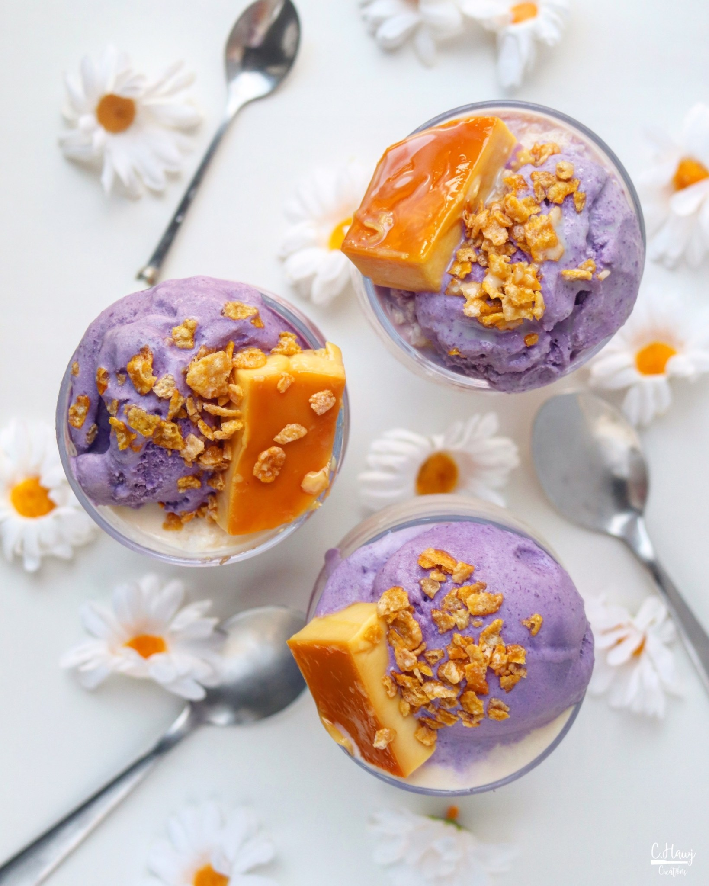

|  |
Halo-halo is one of the most favorite summertime desserts in the Philippines. The name means “mix-mix" in Tagalog—the refreshing dish layers shaved
ice and condensed milk on top of all sorts of ingredients for an end result that packs in lots of contrasting textures, from chewy to crunchy,
creamy to sticky. While components vary, you'll find some common add-ins at most halo-halo carts and bars: jellies, flan, macapuno, palm seeds,
sweetened red beans, shaved ice, ube ice cream, fresh fruit, toasted coconut flakes, pinipig. The version we will use today has some mango jelly
with a fresh fruit set into it as well as pandan-infused sweetened condensed milk. I encourage you to choose your own adventure, layering the
elements in a tall glass or wide bowl. Make sure to use a long-handled spoon to reach everything, and for mixing and swirling. By the end, once
things are mostly melted, you can practically drink it. Originally, halo-halo desserts were sold by Japanese vendors in halo-halo parlors or at
numerous street stalls before the occupation of the Philippines in the 1940s. In fact, this Filipino specialty is often said to have been inspired
by a shaved-ice cooler called anmitsu, another Japanese summer drink.
|